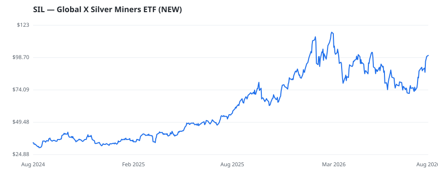

bullish · bearish · n/a — dots: price>SMA10 · SMA10>SMA50 · SMA50>SMA200 · up>down volume (20d)

🛒 Newly buying: TORNO CAPITAL, LLC (+28%, 1.8% of book)
| Fund | Fund alpha vs SPY | Position | % of book |
|---|---|---|---|
| Elite Wealth Management, Inc. | +1% | $8M | 2.3% |
| TORNO CAPITAL, LLC | +28% | $6M | 1.8% |
| RIA Advisory Group LLC | +3% | $2M | 0.4% |
Hedge data: SEC EDGAR 13F · ranked funds beat SPY in >50% of their quarters · fund alpha = mirror-portfolio return minus SPY.